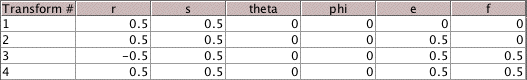

| 123 | 312 | 124 |
| 2. Suppose T3 is changed so the table becomes | ||||||||||
|  | ||||||||||
| The e entry for T3 is 0.5 so the attractor remains the unit square. | ||||||||||
| Shade the regions with address 123, 312, and 124. | ||||||||||
| ||||||||||
| Compare these with your answers to problem 1. Comment on the similarities and the differences. | ||||||||||
| Here are the answers. |
Return to Address Lab Exercises.